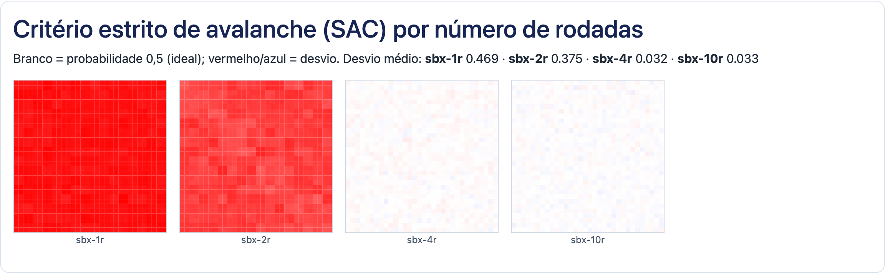

CryptoLab: sistema criptográfico e análise de ataques
Cifra simétrica própria com chave dinâmica, esteganografia, Big Data, IA e dashboard de segurança
Equipe: Eurivaldo José de Vasconcelos Filho, Alec Carneiro Theotônio, Lucas Ferraz Santana Filgueiras, Felipe Rodrigues Serpa Azevedo, Pedro Wanderley de Lira Santos Disciplina: Cibersegurança Aplicada a Dados e IA • Profa. Renatta Nigro
Resumo
Criamos a SBX-128, uma cifra de blocos própria (XOR, substituição, permutação e mistura em 10 rodadas), com uma chave nova derivada para cada mensagem, arquivo ou imagem. Depois a atacamos com força bruta, análise diferencial e análise estatística, comparando cinco variantes, da mais fraca ao AES-256-GCM. Em volta da cifra, o CryptoLab esconde segredos em imagens, grava 1 milhão de eventos num repositório analítico e usa IA para achar comportamento anormal. Tudo aparece num dashboard administrativo.
A versão completa chegou a avalanche de 50%, saída estatisticamente aleatória e espaço de chave de 2256. As variantes fracas foram quebradas. A própria análise também achou uma falha na SBX-128 (chaves fracas), que foi corrigida e retestada.
50,05%avalanche da SBX-128 (ideal: 50%)
2256espaço de chave
1.000.000eventos analisados
96,1%das anomalias detectadas
Resposta ao feedback do Projeto 1
Uma única chave simétrica para tudo. Agora nenhuma chave é compartilhada entre usuários, conversas ou finalidades. No CryptoLab, uma chave mestra apenas deriva as outras (uma por mensagem, arquivo e imagem). No SecureBoard, as mensagens privadas passaram a usar uma chave por conversa. Detalhes na seção 02.
Itens faltantes no relatório. As seções seguem os cinco itens da Parte 5, e o registro de uso de IA traz os sete campos pedidos (seção 07).
Item pedido (Parte 5)
Seção
Item pedido
Seção
Arquitetura do sistema
01
Testes realizados
03 e 04
Descrição do algoritmo e funcionamento
02
Resultados (respostas da Parte 4)
05
Uso de IA
07
Conclusão
06
01Arquitetura do sistema
Seguimos as seis camadas do diagrama do enunciado. Cada camada é um módulo Python em cryptolab/, testável sem o Flask. O dashboard herda do SecureBoard o controle de acesso, o CSRF e o registro de auditoria.
1. EntradaTexto (mensageria simulada), arquivos e imagens
2. CriptografiaSBX-128 + CBC + HMAC, chave por objeto; AES-256-GCM como referência
3. EsteganografiaSegredo cifrado escondido nos bits da imagem
4. Big DataDuckDB colunar, 1M de eventos, Parquet
5. IAIsolation Forest + regras, por usuário a cada 5 min
6. DashboardAlertas, gráficos, ataques e integridade
Módulo
O que faz
keys.py
Chave mestra, derivação (HKDF) e rotação
cipher.py, files.py
SBX-128 com rodadas e modo configuráveis (para comparar versões fracas e fortes); cifragem de arquivos
stego.py
Esteganografia e esteganálise
events.py, simulate.py
Repositório colunar (DuckDB, rápido em análises; exporta Parquet) e carga sintética
anomaly.py, integrity.py
Detecção de anomalias e integridade por SHA-256
attacks.py, experiments.py
Ataques e métricas, com sementes fixas: um comando reproduz todos os números
Por que uma cifra própria se o diagrama cita AES-256
O enunciado pede para criar o algoritmo e atacá-lo. Por isso a SBX-128 é a cifra estudada, e o AES-256-GCM entra como referência em todos os testes. A mensageria real do SecureBoard continua com AES-256-GCM, como no diagrama.
02Descrição do algoritmo e funcionamento
A SBX-128 cifra blocos de 16 bytes em 10 rodadas. Cada rodada usa as quatro operações exigidas, e uma compensa a fraqueza da outra:
para r = 1..10:
estado ^= K[r-1] # XOR com a chave da rodada
estado = SBOX[estado] # substituição (confusão); S-box gerada pela chave
estado = PERM(estado) # permutação de bytes gerada pela chave
se r < 10: MixColumns # mistura entre bytes (difusão)
estado ^= K[10]
Como a chave muda a cada uso
Chave mestra de 256 bits, fora do código e identificada por um key_id. Ela nunca cifra dados.
Por mensagem ou arquivo: um salt aleatório gera duas chaves, uma para cifrar e outra para autenticar. A mesma mensagem nunca gera a mesma saída.
Dentro da cifra: da chave de cifragem saem as 11 chaves de rodada, a S-box e a permutação. Se a permutação sorteada prender a difusão (seção 03), ela é sorteada de novo.
Rotação: uma nova mestra passa a cifrar; as antigas só decifram.
Modo de operação e integridade
Mensagens maiores usam CBC com IV aleatório. Depois de cifrar, uma tag HMAC-SHA256 é calculada sobre tudo e conferida antes de decifrar: qualquer bit alterado é rejeitado e nada é devolvido. Arquivos usam o mesmo formato, com o nome original cifrado junto.
"SBX1" | key_id | salt (16 B) | IV (16 B) | texto cifrado | HMAC-SHA256 (32 B)
Gerenciamento de chaves
Chave
Origem
Se vazar, expõe
Mestra do CryptoLab
Aleatória, 256 bits, com key_id
Todas as chaves derivadas dela
Cifrar / autenticar
HKDF(mestra, salt do objeto)
Uma mensagem ou um arquivo
Ordem da esteganografia
HKDF(mestra, salt da imagem)
Uma imagem
Conversa do SecureBoard
HKDF(chave das mensagens, par de usuários)
Uma conversa
Pseudonimização (LGPD)
Chave separada
Identidade nos eventos
Por isso a mestra é o ponto mais sensível. Em produção ela iria para um cofre de chaves (KMS/HSM).
03Testes realizados: ataques à cifra
Atacamos cinco variantes: XOR repetido (chave de 4 bytes, propositalmente fraca), SBX com 1 rodada e com 10 rodadas em modo ECB, a SBX completa (nossa proposta) e o AES-256-GCM (referência).
Força bruta
O atacante conhece um texto e sua cifra e testa chaves de verdade num espaço reduzido. A velocidade medida é projetada para o espaço completo.
Variante
Espaço
Chaves/s medidas
Tempo médio
A 1012 chaves/s
XOR repetido
232
346.904
1 h 43 min
2 ms
SBX 1 rodada
2256
4.059
4,5×1065 anos
1,8×1057 anos
SBX completa
2256
2.430
7,6×1065 anos
1,8×1057 anos
AES-256-GCM
2256
259.503
7,1×1063 anos
1,8×1057 anos
O ataque sempre achou a chave no espaço reduzido, então ele funciona. O que o barra é o tamanho do espaço: o universo tem 1,4×1010 anos.
Ataque diferencial: alterar 1 bit e comparar
Em 1.000 amostras, trocamos 1 bit do texto (ou da chave) e medimos quantos bits da saída mudam. O ideal é 50%. O SAC faz o mesmo para cada par de bits de entrada e saída (ideal: desvio 0).
Variante
1 bit texto
1 bit chave
XOR repetido
0,83%
3,1%
SBX 1 rodada
3,12%
50,0%
SBX 10 rodadas (ECB)
50,23%
50,2%
SBX completa
50,05%
49,88%
AES-256-GCM*
0,83%
50,0%
Rodadas
Desvio médio do SAC
1
0,469
2
0,375
4
0,032
10
0,033
Com 1 rodada, 1 bit alterado muda só 1 byte. A difusão completa aparece a partir de 4 rodadas. A tag de autenticação foi deixada de fora da medida, porque ela muda ~50% em qualquer cifra e esconderia uma difusão fraca.
* O GCM é uma cifra de fluxo: 1 bit no texto muda 1 bit da saída (com a tag, 26,0%). A segurança dele vem do nonce único e da autenticação, não da avalanche.
Achado na nossa própria cifra: chaves fracas (corrigido)
Falha: a permutação é a mesma em todas as rodadas, e a mistura só atua dentro de cada coluna de 4 bytes. Se a permutação devolve os bytes de uma coluna para ela mesma, a diferença fica presa ali.
Evidência: 0,18% das chaves (1 em 550) tinham esse defeito. Numa delas, 1 bit alterado deixou 12 de 16 bytes intactos, mesmo com 10 rodadas. A média de quase 50% escondia isso: o pior caso da amostra era 10,9%.
Correção e reteste: a permutação passou a ser sorteada de novo quando prende a difusão. Resultado: nenhuma chave fraca em 3.000, e o pior caso subiu para 34,4%, dentro da variação normal.
Ataque estatístico
Ciframos ~60 KB de texto em português e analisamos a saída: distribuição dos bytes (χ²), entropia e blocos repetidos. No XOR, também tentamos recuperar a chave só pela frequência das letras.
Variante
p-valor do χ²
Entropia (bits/byte)
Blocos repetidos
Ataque de frequência
XOR repetido
≈ 0
6,13
2.769
chave recuperada
SBX 1 rodada
≈ 0
7,30
2.769
falhou
SBX 10 rodadas (ECB)
3×10−88
7,988
2.769
falhou
SBX completa
0,603
7,997
0
falhou
AES-256-GCM
0,603
7,997
0
falhou
No XOR, o ataque descobriu o tamanho da chave (4 bytes), recuperou a chave f5b16522 e leu 100% do texto sem conhecer nenhum texto claro. Em ECB, blocos iguais geram cifras iguais, e o desenho da imagem continua visível. A SBX completa e o AES ficaram indistinguíveis de dados aleatórios.
Figura 1. Bytes da saída (XOR × SBX completa) e imagem cifrada: em ECB, o logotipo continua visível.

Figura 2. SAC por número de rodadas. Branco = ideal; vermelho = bits que não mudam.
Esteganografia
O segredo é cifrado e autenticado antes de ser escondido nos bits menos significativos da imagem, numa ordem própria de cada imagem. Um segredo de 400 bytes numa imagem de 192×192 deu PSNR de 65,3 dB (alteração invisível). Alterar bits do segredo foi rejeitado em 3 de 3 tentativas.
Na esteganálise (teste χ²), a ordem com chave escondeu até 50% da capacidade (PSNR 54,2 dB), enquanto a ordem sequencial já era detectada nesse ponto; com a imagem cheia (51,1 dB), as duas são detectadas. Recomendação: usar até ~10% da capacidade (61,1 dB, não detectado).
04Testes realizados: Big Data e IA
O repositório guarda operações de cifra, logins, alterações de arquivos, uso da esteganografia, ataques executados e as próprias detecções. Os eventos reais do SecureBoard entram com o usuário pseudonimizado (LGPD). Para testar em escala, simulamos 200 usuários por 7 dias e injetamos as cinco anomalias do enunciado, marcadas para conferência:
Anomalia do enunciado
Eventos
Episódios
Número incomum de tentativas de autenticação
4.017
31
Frequência elevada de falhas de descriptografia
3.989
61
Alterações inesperadas em arquivos
35
20
Padrões atípicos de acesso (madrugada, IPs novos)
3.998
96
Geração incomum de eventos (20× a taxa normal)
4.124
6
Desempenho com 1 milhão de eventos: ingestão em 1,65 s*, resumo do dashboard em 35 ms, extração de atributos de 220 mil janelas em 395 ms e treino da IA em 1,3 s. Os dados ocupam 14 MB no DuckDB e 11 MB em Parquet.
* Medido com o notebook na bateria; com a máquina ociosa, 0,37 s. As métricas de cifra e de IA não mudam entre execuções (sementes fixas).
Integridade de arquivos: uma anomalia real
Seis arquivos críticos da aplicação são comparados por SHA-256 com uma lista de referência assinada (HMAC), para que um invasor não consiga refazê-la. Cada divergência vira um evento que alimenta a IA.
Na demonstração, 1 byte acrescentado ao requirements.txt gerou MISMATCH; restaurado o arquivo, voltou a MATCH.
Figura 3. Verificação SHA-256 detectando o arquivo alterado.
IA: detecção de comportamento anormal
Para cada usuário, a cada 5 minutos, calculamos 8 atributos (volume, falhas de login e de decifragem, arquivos alterados, IPs, recursos, horário e bytes). O Isolation Forest aprende o que é normal sem ver os rótulos e aponta o que foge do padrão, mostrando os atributos responsáveis. Comparamos com regras fixas e com a união dos dois (híbrido).
Detector
Precisão
Recall
Acertos / falsos alarmes / perdidos
Arquivo alterado
Isolation Forest
59,8%
85,1%
262 / 176 / 46
0%
Regras
100%
95,8%
295 / 0 / 13
100%
Híbrido
62,7%
96,1%
296 / 176 / 12
100%
Regras vencem, mas é circular: foram escritas por quem conhece os ataques simulados e não pegam um ataque novo. A IA achou 85% sem usar os rótulos, incluindo 99% dos acessos atípicos.
Custo do híbrido: sobre as regras, ganhou só 1 acerto e trouxe 176 falsos alarmes (0,08% das janelas). O ganho esperado é contra ataques desconhecidos, que estes dados não medem.
Ponto cego: arquivo alterado é um evento isolado e passa despercebido pela IA. Por isso existe a verificação por SHA-256.
Limite da avaliação: é exploratória. O modelo foi treinado e avaliado nos mesmos dados sintéticos, e um parâmetro foi calibrado olhando os rótulos.
Risco: um atacante pode espalhar o ataque no tempo. Mitigação: janelas de 5 min, 1 h e 1 dia e retreino periódico.
Figura 4. Qualidade dos detectores e recall por tipo de anomalia.
Testes automatizados
Foram escritos 123 testes novos, cada um falhando antes da implementação. A suíte completa tem 365 testes e passa inteira num clone limpo. Ela cobre acesso negado a usuário comum, ausência de CSRF, arquivo ou imagem adulterados, arquivo de 4 MB cifrado e decifrado, chaves fracas e chave ausente (falha fechada).
05Resultados e respostas da Parte 4
Critério
XOR
SBX 1r
SBX 10r ECB
SBX completa
AES-256-GCM
Avalanche (1 bit no texto)
0,8%
3,1%
50,2%
50,0%
0,8% (fluxo)
Padrões na saída
sim
sim
sim (ECB)
não
não
Força bruta (espaço completo)
~2 h
1057 anos
1057 anos
1057 anos
1057 anos
Ataque que funcionou
estatístico
diferencial e estatístico
estatístico
nenhum
nenhum
O sistema apresenta efeito avalanche?
Sim, na versão completa: 50,05% dos bits mudam ao alterar 1 bit do texto e 49,88% ao alterar 1 bit da chave, com SAC de 0,033. Antes da correção das chaves fracas, a média já era de 49,94%, mas o pior caso chegava a 10,9%. Não nas variantes fracas (XOR: 0,8%; 1 rodada: 3,1%).
Existem padrões na saída?
No XOR e em qualquer uso de ECB, sim: bytes desiguais, 999 de 1.000 blocos repetidos numa entrada padronizada e a imagem visível através da cifra. Na versão completa, não: estatística igual à do AES-256-GCM.
Qual ataque foi mais eficaz?
O estatístico: quebrou o XOR sem texto claro e expôs o ECB mesmo com a cifra forte. A força bruta só vence espaços pequenos. O diferencial mostrou a falta de difusão com poucas rodadas e achou as chaves fracas, mas não recuperou chave.
O sistema é seguro?
Depois da correção, resiste aos ataques testados, mas não é seguro para produção.
A favor: espaço de 2256, avalanche e SAC próximos do ideal, saída aleatória, chave nova por objeto e autenticação que rejeita qualquer adulteração.
Contra: nossa própria análise achou uma falha que a média escondia, então podem existir outras; a cifra não passou por análise pública; a implementação em Python pode vazar informação pelo tempo de execução; e é ~100 vezes mais lenta que o AES.
06Conclusão
Criamos, atacamos e avaliamos a cifra. A segurança veio do conjunto: rodadas suficientes com uma permutação que espalhe a diferença, modo CBC com IV aleatório, chave nova por objeto e autenticação. Cada variante fraca mostrou o que acontece quando uma dessas peças falta.
Por isso a SBX-128 fica como laboratório, e o SecureBoard mantém o AES-256-GCM, que tem as mesmas propriedades e décadas de análise pública. A derivação de chaves do CryptoLab foi levada às mensagens do SecureBoard. A IA ajuda em ataques volumosos, mas eventos isolados pedem controles fixos como o SHA-256: o desenho final é híbrido.
Limitações
Os dados de comportamento são sintéticos, e a avaliação da IA é exploratória.
1 milhão de eventos cabe numa máquina; o processamento distribuído não foi testado.
A chave mestra fica em variável de ambiente (produção: KMS/HSM).
No SecureBoard, as mensagens ainda não têm rotação de chave, e as antigas não foram recifradas no novo formato.
A lista de referência da integridade nasce na primeira verificação; em produção, seria gerada no build.
Como reproduzir
pip install -r requirements.txt
flask --app run cryptolab-genkey # gera a chave mestra para o .env
flask --app run cryptolab-all --events 1000000 # simulação, ataques, IA e Parquet
flask --app run cryptolab-integrity # verificação SHA-256
python run.py # dashboard em /admin/cryptolab
07Registro de uso de IA
Registro completo, com os prompts, em docs/projeto2/registro-uso-ia.md. O Claude Code (Opus 5.5) apoiou a construção geral; o Codex fez revisão cruzada. Decisões e validação: equipe.
Finalidade
O que a IA respondeu / foi aproveitado
Descartado ou corrigido
Como validamos
Apoio ao planejamento (enunciado e feedback)
Divisão em 10 tarefas com testes
Parâmetro da IA ajustado após medir (0,02 → 0,002)
Cada requisito ligado a um teste ou evidência
Apoio à implementação
Apoio no cryptolab/ e no dashboard
Teste mal escrito pela IA (lia PNG como texto)
Teste falhando antes e passando depois
Escolher as medidas de ataque
Avalanche sobre 1 bloco; SAC por rodada
Medida em textos longos subestimava a difusão
Valores batem com a teoria
Revisar a execução completa
Teste de adulteração mexia num pixel sem segredo
O "falha" era do teste, não da cifra
Novo teste: 3/3 adulterações rejeitadas
Entender o 0% da IA em arquivos
Evento isolado não se destaca; desenho híbrido
"Ajustar a IA até pegar tudo" (sobreajuste)
Recall por tipo de anomalia
Revisar como a professora (enunciado + feedback)
Chave única na esteganografia e outras lacunas
Nada ficou só documentado: tudo corrigido
22 testes novos; números conferidos
Revisão cruzada com o Codex
Chaves fracas, avaliação da IA, custo do híbrido, bug de 4 MB
Cada ponto reproduzido antes de corrigir
0,18% de chaves fracas medidas; 4 testes novos
Apoio a relatório e slides
Estrutura e redação
Frases sem número trocadas
Conferido com os JSONs
Princípio: nenhuma resposta da IA foi aceita sem execução. Toda afirmação tem um teste ou uma medida reproduzível, e os erros encontrados foram corrigidos pela evidência.
Referências
NIST FIPS 197 (AES). NIST FIPS 180-4 (SHA-256). RFC 5869 (HKDF). RFC 2104 (HMAC). NIST SP 800-38A e 800-38D (modos ECB, CBC e GCM). NIST SP 800-57 (gerenciamento de chaves). Webster & Tavares (1985), On the design of S-boxes. Shannon (1949), Communication Theory of Secrecy Systems. Westfeld & Pfitzmann (1999), Attacks on Steganographic Systems. Liu, Ting & Zhou (2008), Isolation Forest. Documentação do DuckDB e do Apache Parquet. Lei nº 13.709/2018 (LGPD).